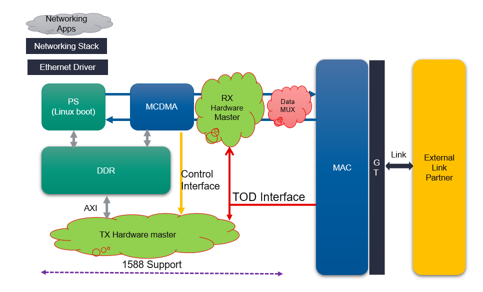

ZCU670 Evaluation Kit Tutorial |
Hardware Architecture of the PTP Packet Processor |
Hardware Architecture of the PTP Packet Processor¶
PTP Tx HW MASTER IP¶
The PTP HW Master receives the necessary information from the USER-APP fields of the AXI MCDMA for capturing timestamp and storing it in memory for the Transmitted PTP packets. The address of the memory where the timestamp needs to be stored is provided by the USER-APP fields of AXI MCDMA Control stream. The SW provides a 2-bit PTP flag. Based on the value of the Flag bits, the PTP HW Master drives the tx_ptp_1588op_in [1:0] interface of MRMAC. MRMAC performs the PTP operation based on the 2 bit value of tx_ptp_1588op_in[1:0] as given in below table:
| tx_ptp_1588op_in [1:0] | Operation |
|---|---|
| 2’b00 | No operation: no timestamp is taken, and the frame is not modified. |
| 2’b10 | 2-step: a timestamp should be taken and returned to the client using the additional ports of 2-step operation. The frame itself is not modified. |
| 2’b11 | Reserved |

The PTP HW Master supports 2-step PTP mode.
2-step Mode:
When the ptp flag value is “10”, the PTP HW Master initiates a memory write operation of the timestamp value. The timestamp value is written into the memory via NoC. The PTP HW Master makes the final bit 1 (qualifier bit) to indicate the memory write completion to Software.
Rx PTP PACKET DETECT and PREPEND LOGIC (RX Hardware Master)¶
PTP Packet Detection IP parses all the received Packets.
When a PTP packet is received, it parses the Header and sets a PTP Qualifier bit (i) when a PTP packet is detected, that helps the PTP application in upper layer for further processing.
Timestamp prepend logic prepends two 64 bit Datawords (128 bit) to all the received packets, which has 80 bit Timestamp information and the status of the Qualifier bit. Below table has the details of prepended datawords.
| Status words | Content |
|---|---|
| Prepended DW_0 | 63 : 0 - Timestamp[63:0] |
| Prepended DW_1 | 15 : 0 - Timestamp[79:64] 30 : 16 - Reserved 31 - PTP Packet Qualifier bit 63 : 32 - Reserved |
| DW-2 | Received Packet data stream starts |
Supported Features:
PTP Packet over IEEEE 802.3
PTP Packet over UDP IPV4 – Version 1 and Version 2
Two step PTP
The PTP detect logic checks the Type field of the received packet whenever a new ethernet packet is received and also checks for the multicast IP destination address for UDP IPV4 Packets, to carry out the PTP detection and sets the PTP Packet Qualifier bit - DW_1[31]
Next Steps
Go to the SW Architecture Platform page
Go back to the ZCU670 Ethernet TRD design start page
License
Licensed under the Apache License, Version 2.0 (the “License”); you may not use this file except in compliance with the License.
You may obtain a copy of the License at http://www.apache.org/licenses/LICENSE-2.0
Unless required by applicable law or agreed to in writing, software distributed under the License is distributed on an “AS IS” BASIS, WITHOUT WARRANTIES OR CONDITIONS OF ANY KIND, either express or implied. See the License for the specific language governing permissions and limitations under the License.
Copyright© 2023 Xilinx